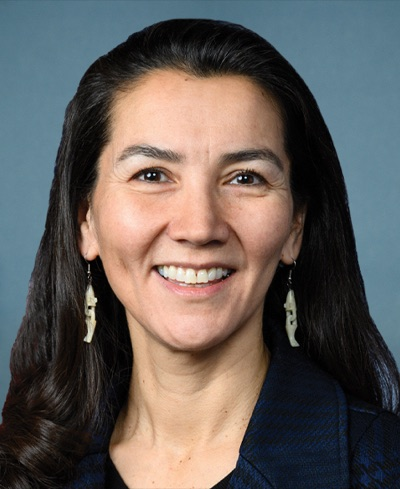

| 최신 여론조사 | ||||||
| 최신순 · 14건 · 양수 = 민주 우위(D+) | ||||||
| 조사기관 | 실사기간 | 모집단 | 표본 | 결과 | 마진 | 비고 |
|---|---|---|---|---|---|---|
| Data for Progress | 2026-10-08 ~ 2026-10-16 | LV | 671 | Peltola 51 – 49 Sullivan | D+2 | VoteHub 경유(원출처 URL) |
| Public Policy Polling | 2026-10-14 ~ 2026-10-15 | RV | 578 | Peltola 48 – 47 Sullivan | D+1 | VoteHub 경유(원출처 URL) · VoteHub partisan 표기 DEM(후원자 없음 → 하우스 성향, partisan 열은 의뢰 당파만) |
| Rasmussen Reports (R 성향) | 2026-10-12 ~ 2026-10-15 | LV | 775 | Peltola 44 – 42 Sullivan | D+2 | 일일 브리핑 10/22 추출 |
| InsiderAdvantage | 2026-10-09 ~ 2026-10-10 | LV | 1200 | Peltola 48.2 – 42.6 Sullivan | D+5.6 | 일일 브리핑 ? 추출·1차 출처 보강(10/13) · 1순위 48.2–42.6 기준·RCV 최종 라운드 50.1–48.0 · Final RCV round 50.1-48.0 (digest's 50-48). First round: Peltola 48.2, Sullivan 42.6. MoE ±2.83 (per Political Wire). Sponsor not stated. Pollster release URL exists (insideradvantage.com/insideradvantage-u-s-senate-surveys-alaska-ranks-choice-peltola-50-sullivan-48-...) but server refused connection repeatedly; source given is Newsweek article with dates and n. |
| Alaska Survey Research | 2026-10-01 ~ 2026-10-03 | LV | 1512 | Peltola 47 – 45 Sullivan | D+2 | 일일 브리핑 ? 추출·1차 출처 보강(10/13) · 1순위 47–45 기준·RCV 최종 라운드 51–49 · 51-49 is the final ranked-choice round. First round: Peltola 47, Sullivan 45, Dan J. Sullivan (R) 5, Heikes (R) 3. MoE ±3. Sponsor not stated. No pollster web release located; source is Newsweek article reporting field dates and n (corroborated by Juneau Independent: Oct 1-3, 3% MoE, +2 final round). |
| ★ NYT/Siena | 2026-09-21 ~ 2026-10-01 | LV | — | Peltola 50 – 43 Sullivan | D+7 | 일일 브리핑 10/05 추출 · 1순위/RCV 최종 기준 미확인(원문 미열람) |
| Quantus Insights | 2026-09-28 ~ 2026-09-30 | LV | 758 | Peltola 47.2 – 47.8 Sullivan | R+0.6 | VoteHub 경유(원출처 URL) |
| Trafalgar Group | 2026-09-22 ~ 2026-09-24 | LV | 1079 | Peltola 46 – 47 Sullivan | R+1 | 일일 브리핑 10/18 추출 |
| co/efficient | 2026-09-14 ~ 2026-09-17 | LV | 799 | Peltola 46 – 49 Sullivan | R+3 | VoteHub 경유(원출처 URL) |
| Rasmussen Reports | 2026-09-13 ~ 2026-09-14 | — | — | Peltola 39 – 39 Sullivan | D+0 | _NIS 상원 주간 2026-09-20 §4·표본·오차 미공표(【수집 필요】)·AARP 초당적 조사와 같은 주에 동률 · 하우스 성향 공화계(후원자 없음 — partisan은 의뢰 당파만, 2026-10-13 정리) |
| ★ AARP/Fabrizio Ward·Impact Research | 2026-09-08 ~ 2026-09-11 | LV | 800 | Peltola 46 – 41 Sullivan | D+5 | ±3.5·_NIS 상원 주간 2026-09-20 §4·9/17 발표·양당 공동(Fabrizio Ward[R]+Impact Research[D])·1순위 기준이며 **순위선택 라운드 시뮬레이션 후 펠톨라 53–47**(D.J.설리번 4·하이키스 3)·자체 반증: 50세 이상 설리번 49–42 |
| Alaska Survey Research | 2026-08-20 ~ 2026-08-23 | LV | 1495 | Peltola 50.6 – 49.4 Sullivan | D+1.2 | VoteHub 경유(원출처 URL) · RCV 최종 라운드 수치(1순위 미확인) |
| Alaska Survey Research | 2026-08-02 ~ 2026-08-05 | LV | 1371 | Peltola 50.8 – 49.2 Sullivan | D+1.6 | ±3·RCV 최종 라운드 시뮬레이션 |
| ★ NYT/Siena | 2026-06-15 ~ 2026-06-29 | LV | 593 | Peltola 45 – 47 Sullivan | R+2 | RCV 1차 의향 |
| 출처 URL은 `data/senate_polls.csv`에 행별로 보관합니다. 당파 후원(D/R 성향) 조사는 공개 선택 편향이 있으니 단일 조사보다 여러 조사의 방향을 함께 보세요. 표는 데이터에서 자동 렌더되며 새 조사가 들어오면 갱신됩니다. ★ = 주목 기관(NYT/Siena·Fox News·Marist·AARP) — 추이 그림에서도 큰 점으로 표시합니다. | ||||||
| 이번 주 판독 — **DOJ가 10/22 알래스카 상원 결과의 주 인증을 막아 달라는 사전 소송을 냈다** — 전국유권자등록법(NVRA)을 근거로, 투표용지의 동명이인 'Daniel J. Sullivan'(8월 예비선거 약 4,100표)보다 적은 표차로 설리번 의원이 질 경우를 겨냥한다. 트럼프는 소송 지시를 인정했고('CHEATING'), 노터데임대 데릭 뮬러 교수는 '성공 가능성이 사실상 없다'고 평가했다. 알래스카 대법원은 6월 동명이인의 투표용지 잔류를 이미 확정했고, 법원 일정은 미확인이다. RCV 개표는 최대 15일 — 선거 당일 밤 확정은 어렵다. 시장은 사실상 무반응. | ||||||
| 알래스카 주의 — 본선은 선호투표(RCV)라 조사마다 '1순위 의향'과 'RCV 최종 라운드 시뮬레이션'이 다르게 보고됩니다. 이 표의 수치는 원칙적으로 1순위 기준이며, 최종 라운드 수치만 공개된 조사는 비고에 'RCV 최종'으로 표시했습니다. 기준이 다른 조사끼리 마진을 직접 비교하지 마세요. | ||||||
알래스카 Alaska
공화당 방어석이지만 이번 사이클에 가장 크게 움직인 주입니다. 2선 현직 Dan Sullivan(공화, 군사위)에게 알래스카 원주민(Yup’ik) 최초의 연방의원인 전 하원의원 Mary Peltola(민주)가 도전합니다. 알래스카는 모든 정당이 한 용지에서 겨루는 top-4 예비선거와 선호투표(RCV) 본선을 쓰고, 현직과 이름이 같은 동명이인 후보가 본선 용지에 함께 올라 있습니다. 공화 우위 주에서 Peltola의 개인 인기가 얼마나 넓은 연합을 만드는지, 탈락 후보의 2순위 표가 어디로 가는지가 승부를 정합니다.
Peltola (D) vs Sullivan (R·현직) · AK
공화 방어Cook Toss-up 10-23Sabato Lean D 10-15IE Toss-up 10-23Kalshi 민주 74¢ 10-25
조사 마진 추이 (양수 = 민주 우위 · 속 빈 점 = 당파 후원 조사)
데이터 기준 2026-10-25
- 여론조사 10-29 — 신규 없음(직전: Data for Progress(민주 성향) 10/20 게재 펠톨라 51–49, RCV 1라운드 47–44, 댄 J. 설리번 4) · NYT/Siena 펠톨라 50, 설리번 43은 Forbes 요약에 50세 이상 하위표본으로만 나타나며 10/3자다(신뢰도 낮음)
- 판단 10-29 — 원문은 알래스카 소송을 공화 쪽 꼬리 위험으로 남긴다. 트럼프의 사퇴·기소 요구는 제목 수준이라 판단에 반영되지 않았다.
구도: 공화 방어 — 현직 Sullivan(R, 군사위) vs Peltola(D, 전 하원의원).
구조 변수: top-4 예비 + RCV 본선. 동명이인 Dan J. Sullivan의 용지 등재, 탈락 후보 2순위 표의 향방, Peltola의 개인표.
한국 함의: Sullivan의 인도태평양법(한국 명시)·한화 필리 조선소·Alaska LNG-POSCO(직접 관여 풍부).
이번 주 변수 주간 10-25 — DOJ 인증 차단 소송(10/22) — 전문가 ‘승소 가능성 희박’, 조사는 펠톨라 +1~+5 유지
예비 득표율을 본선 마진으로 읽지 마세요. top-4는 전 정당이 한 용지에서 겨루는 통합 경선입니다. 민주 성향 표는 펠톨라 한 명에 결집한 반면 공화 성향 표는 현역·동명이인·Heikes 등으로 갈렸으므로, 48–43이라는 간격은 본선 D+5를 뜻하지 않습니다. 본선은 4명이 RCV로 겨루고, 탈락자의 2순위가 어디로 가느냐가 실제 승부를 정합니다.
로컬 상황 — 일일 기록
로컬 상황 · 일일 정리본에서 날짜별 누적 · 같은 사안은 처음 본 날짜로 한 번
- 10-29 이월: 트럼프는 펠톨라가 이기면 인증을 막는 법무부 소송을 자신이 지시했다고 말했다(political.org 제목, 10/23) · 투표용지에 동명이인 댄 J. 설리번이 있다 · ADN(중립), Alaska Beacon(좌), Must Read Alaska(우)는 미열람이어서 편향 가능성이 있다
- 10-28 이월: 법무부의 개표 인증 저지 소송에서 펠톨라 측 기각 신청이 샤론 글리슨 판사 앞에 계류 중이다(Reuters/KSL 10/26). ADN(중립)과 Alaska Beacon(좌) 제목으로 재확인했으나 판결·심리 일정은 없다. GV Wire(10/27, 2차)는 “주정부”가 기각을 요청했다고 적었지만, 신청 주체는 Reuters에 따라 펠톨라 변호인단으로 본다 · Must Read Alaska(우)는 미열람이라 보도가 한쪽으로 치우쳤다.
- 10-27 인증 저지 소송은 「법·제도」 절에 정리했다. 이월: 트럼프는 소송을 자신이 지시했다고 말했다(CNBC, 10/23). 설리번 의원의 발언은 기사에 없다. Alaska Beacon(좌)은 제목만 확인했고 ADN(중립)과 Must Read Alaska(우)는 읽지 못해 보도가 한쪽에 치우쳤을 수 있다.
- 10-26 이월: NVRA 소송은 10/22 제기됐다. 트럼프는 자신이 직접 지시했다고 말했다(CNBC 제목 10/23). 노트르담대 데릭 뮬러는 성공 가능성이 사실상 없다고 평가했다 · 알래스카 비콘(좌)과 Must Read Alaska(우)는 열람하지 못해 일방적이다
- 10-25 법무부 NVRA 소송은 10/22 제기됐고 법원 명령·심리 일정은 확인되지 않았다. 트럼프는 자신이 소송을 지시했다고 인정했다(PBS) · 우파 시각(Must Read Alaska 우)은 읽지 못했다. 한쪽 시각이다. Alaska Public Media(중도좌)는 10/23자를 이월했다.
- 10-24 예비선거에서 설리번 의원은 6만 8천 표 이상, 대니얼 J.는 약 4,100표를 얻었다 · 알래스카 대법원은 앞서 그를 제외하려는 공화당 측 시도를 기각했다 · RCV 개표는 최대 15일 걸릴 수 있다(뉴스위크) · Must Read Alaska 미확인
- 10-23 펠톨라는 이란전쟁을 알래스카 휘발유 가격(4.96달러 vs. 전국 4.33달러)과 연결(Newsweek 10/15) · 펠톨라는 8월 예비선거에서 49.5–41.4로 앞섰다(Beacon; 명단은 48.1–42.7 — 미조정) · Must Read Alaska(우)와 ADN은 읽지 못함.
- 10-22 마지막 토론(10/15, 앵커리지)은 이란, 군인 급여, 사회보장, 엡스타인 파일, 펠톨라가 부인하는 직원 관련 NYT 보도를 두고 난타전이었다(News-Miner) · Must Read Alaska(우)의 10/19 “펠톨라가 토론을 피했다”는 설리번 헤드라인은 본문 미확인 · 투표용지에 동명이인 “Dan J. Sullivan” 등재.
- 10-21 동명이인 Dan J. Sullivan 투표용지 유지 · 유세: 2026-10-13 · 와실라 · 도널드 트럼프(공화) → 댄 설리번 · 유세(이월, 재확인 안 됨)
- 10-20 이월: 10/15 마지막 토론(Alaska Beacon 좌, 10/16)은 10/19 브리핑에서 다룸 · 미해결: Alaska Beacon은 8월 예비선거를 펠톨라 49.5–41.4로 보도해 명단의 48.1–42.7과 다름 · 이월·재확인 못함: 2026-10-13 · 워실라 · 도널드 트럼프(공화) → 댄 설리번 · 집회
- 10-18 Fox는 동명이인 “설리번” 후보를 언급했다 · 유세: 2026-10-13 · 와실라 · 도널드 트럼프(공화) → 댄 설리번 · 메나드 스포츠센터 집회, 약 3,500명(이월, 재확인 안 함) · Alaska Public Media(중도좌), ADN, Must Read Alaska(우), Alaska Beacon(좌)은 확인하지 못했다.
- 10-17 Fox는 설리번과 이름이 같은 후보가 변수라고 언급했다 · 유세: 2026-10-13 · 와실라 · 도널드 트럼프(공화) → 댄 설리번 · 메나드 스포츠센터 집회, 약 3,500명(이월, Alaska Public Media 중도좌) · 유세: 2026-10-16(예고) · 앵커리지 · 테드 크루즈(공화) · 모금행사(이월).
기준 2026-10-29 · 최근 12건 표시(전체 54건)
의석 현황 — 현직·공석
- 현직 재선 도전: Dan Sullivan(공화)이 2014년 초선·2020년 재선을 거쳐 3선에 도전합니다. 공석이 아닙니다. (Ballotpedia)
개관
선거사: 2024 대선 Trump +13.1. 현재 양 상원 의석 모두 공화(Murkowski·Sullivan)이며, Sullivan은 2014년 초선(현역 Begich 격파)·2020년 재선으로 이번이 3선 도전. 이 의석에서 민주당이 마지막으로 이긴 것은 2008년 Begich입니다. (Senate Majority)
유권자 구성: 무당파가 압도적 다수(약 58%), 공화 약 24%·민주 약 12.5%(2016년 자동유권자등록 도입 후 무당파 급증). (Ballot Access News)
경제 — 에너지·수산·국방, 한국과 직접 닿는 축: ① Alaska LNG 프로젝트($44B)가 한·일·대만과 오프테이크를 추진 중이며, 개발사 Glenfarne이 한국 POSCO International과 연 100만 톤 공급 잠정 합의를 발표했습니다(주지사는 “구속력 있는 한국 합의 임박”이라 주장했으나 개발사는 예비 단계라며 이견 — 구속력은 미확인). ② 수산이 정치 정체성(Peltola “fish, family and freedom”). ③ 미사일방어·인도태평양 전진기지로서 국방. (Alaska’s News Source)
경제·인구 구성
- 인구는 2024년 7월 기준 약 74만 명입니다. (Census QuickFacts)
- 비히스패닉 백인 비율은 2020~2024년 ACS 기준 59.0%입니다. 흑인·히스패닉·아시아계·원주민 비율은 미확인입니다. (Census QuickFacts)
- 중위 가구소득은 2020~2024년 ACS 기준 약 92,788달러입니다. (Census QuickFacts)
- 인구밀도는 전국 최저 수준이고 앵커리지 광역권에 인구가 몰려 있습니다. 구체 수치는 미확인입니다.
- 한국 기업의 대형 투자 사례는 미확인입니다. 에너지·수산 축의 한국 접점은 위 개관에 있습니다.
역대 선거 결과의 특징
대선 10회 — 민주 0 · 공화 10 / 상원 (class 2) 6회 — 민주 1 · 공화 5 / 상원 (class 3) 7회 — 민주 0 · 공화 7 / 주지사 10회 — 민주 3 · 공화 5 · 무소속 2 · 파랑 = 민주, 빨강 = 공화, 회색 = 무소속 · 점선 테두리 = 특별선거 · 칸에 마우스를 올리면 마진 · 출처 위키백과 개별 선거 문서(기준 2026-09-30)
- 대선은 2012년 Romney +14.0%p, 2016년 Trump +14.7%p, 2020년 Trump +10.1%p, 2024년 Trump +13.1%p였습니다. (Wikipedia)
- 연방상원은 2016년 Murkowski가 44.4% 최다득표로, 2020년 Sullivan이 +12.7%p로 이겼습니다. 2022년은 Murkowski가 RCV 최종 라운드 53.7% 대 46.3%로 이겼습니다. (Ballotpedia)
- 주지사는 2018년 Dunleavy +7.0%p, 2022년 Dunleavy +26.1%p였습니다. (Wikipedia)
- 대선·상원 모두 공화 우위가 뚜렷합니다. 다만 RCV 아래서 온건파 Murkowski가 살아남는 등 단순한 안전주는 아닙니다.
주지사·주의회
- 현 주지사는 공화당 Mike Dunleavy로 2018년 12월 취임해 2022년 재선됐습니다. 임기는 2026년 12월에 끝나고 연임 제한으로 2026년은 공석 경쟁입니다. (Ballotpedia)
- 주상원 20석은 공화 11·민주 9지만 민주 9·공화 8의 17인 초당파 연립이 운영합니다. 주하원 40석은 공화 21·민주 14·무소속 5인데 역시 21인 초당파 연립이 다수입니다(34대 주의회). (Ballotpedia)
- 정당 의석수와 실제 운영 연립이 달라 트라이펙타로 분류하기 어렵습니다.
- 2026년에는 주지사·부지사와 주의회 일부 의석이 연방상원과 함께 걸려 있습니다. 8월 18일 top-4 예비선거를 거쳐 11월 3일 RCV 본선으로 치릅니다. (Ballotpedia)
- 주지사 선거의 판세·조사·경과 기록은 알래스카 주지사 페이지에서 다룹니다.
유권자 등록·투표율
- 등록 유권자 총수는 공식 사이트가 자동 접속을 막아 미확인입니다. 정당별 비율은 위 개관에 있습니다.
- VEP 투표율은 2018년 51.2%, 2020년 68.2%, 2022년 50.3%입니다. 2024년 확정치는 미확인입니다. (U.S. Elections Project)

메리 펠톨라 Mary Peltola민주
1973년생(53세) · 전 연방 하원의원(2022~2025) · 어업인 · Yup’ik 원주민 지도자
가족 사별·이혼 포함 세 번 결혼(현 배우자 故 Gene Peltola Jr.), 친자녀 4명·의붓자녀 3명
학력 University of Northern Colorado 초등교육 전공(1991~1993), 알래스카대 수강(1994~1998), 학위 미취득
경력 알래스카 주 하원의원(1999~2009) · 2022 하원 특별·정기선거 승리(RCV로 Palin 격파) · 2024 하원 낙선(48.8% vs Begich 51.2%, R+2.4)
펀드레이징 후보 위원회 누적 모금 3,689만 달러 · 보유현금 410만 달러 (FEC, 10/14 보고)
우호 외부지출 3,329만 달러 (FEC 독립지출, 10/22까지) · 선거운동 트래커 광고 상세
우호 외부지출 3,329만 달러 (FEC 독립지출, 10/22까지) · 선거운동 트래커 광고 상세
강점
- 보수 주에서 이례적으로 높은 개인 호감도(46~52%)
- 2022년 RCV 승리 경험·제도 숙련도
- 초당파·에너지 개발 지지로 보수표 흡수, 원주민 투표율 견인
약점
- 2024년 하원 낙선 이력
- 트럼프 +14 주의 민주당 레이블
- 가용현금 열세·Murkowski의 Sullivan 지지 전환
정책 생활비 절감(중위소득 이하 소득세 면제 등) · 어업 보호·알래스카 수산 · 에너지 개발(Willow 찬성, Pebble 반대) · 원주민 권리·반부패
🇰🇷 한국 함의 직접적 대한국 정책·발언은 공개 출처 없음. 하원 시절 알래스카 명태(pollock) 산업 보호에 주력 — 명태 알(roe)이 한국 시장에서 소비되는 연결고리는 존재
댄 설리번 Dan Sullivan공화 · 현직
1964년생(62세) · 현직 연방 상원의원(2015~) · 변호사 · 예비역 해병 대령
가족 부인 Julie Fate Sullivan(30년+ 결혼), 딸 3명. 처가는 알래스카 원주민(Athabascan) Fate 가문
학력 Harvard University 경제학 학사(1987, magna cum laude), Georgetown University J.D.·외교학 석사(1993)
경력 2014 상원 당선(47.96% vs Begich 45.83%) · 2020 상원 재선(약 54% vs Gross 41%)
펀드레이징 후보 위원회 누적 모금 1,411만 달러 · 보유현금 284만 달러 (FEC, 10/14 보고)
우호 외부지출 3,841만 달러 (FEC 독립지출, 10/22까지) · 선거운동 트래커 광고 상세
우호 외부지출 3,841만 달러 (FEC 독립지출, 10/22까지) · 선거운동 트래커 광고 상세
강점
- 현직 프리미엄·구조적 공화 우위(트럼프 +14 주)
- 해병 군 경력(알래스카 군사기지 연계)
- 트럼프·Murkowski 동시 지지·가용현금 우위
약점
- Peltola 대비 개인 호감도 열세(약 39%)
- 워싱턴 기득권 이미지
- 동명이인(Dan J. Sullivan)으로 인한 1차 집계 보수표 분산 가능성
정책 에너지 개발(Alaska LNG, Willow, ANWR) · 국방·군사기지 강화 · 어업 보호 · 트럼프 어젠다 협조
🇰🇷 한국 함의 한국 직접 연계 존재. Alaska LNG의 핵심 지지자로 한국·일본 대상 LNG 수출을 미국 에너지 안보·동맹 강화 수단으로 추진(한·일은 美 LNG 누적 최대 수출시장)
roll-call / 입법 관심사
Dan S. Sullivan (R, 현역) — 군사위(SASC)·상무위(Commerce) 소속(상무위 연안경비·해양·수산 소위원장으로 조선 청문회 주재). 8개 경합주 현역 중 인도태평양·한국 안보에 가장 직접 관여하는 인물입니다.
- 인도태평양 안보협력 법안(Bennet–Sullivan, 초당, 2025-08) — 국방장관이 일본·필리핀·한국·호주 등과 다자 억제 전략을 수립하도록 요구. 법안 텍스트에 한국이 동맹국으로 명시됐고, NDAA 수정안으로도 제출됐습니다. (Bennet 상원실)
- 조선 — 한화 직접 연계: 2025-10 상무위 조선 청문회를 주재하며 SHIPS for America Act를 옹호했습니다. 동 법은 한화 필라델피아 조선소(한화오션 $5B 투자, 연 2척 미만→최대 20척 확장)를 지원합니다(단 Sullivan은 발의자가 아닌 청문회 주재·옹호자 — 공동발의 여부는 미확인). (Commerce 위)
- DMZ 방문: SASC 순방으로 한국에서 USFK 사령부 면담·DMZ 공동경비구역(JSA)을 방문, 미사일방어·대북 대응을 논의(면담 상대로 보아 2017년경으로 추정 — 정확 일자 미확인). (Sullivan 상원실)
Mary Peltola (D, 전 하원의원) — Bristol Bay 어업 보호(Pebble Mine 차단 법안)·자원개발에 집중. ANWR 시추법엔 위원회 찬성·본회의 기권의 복합 입장. 한국·인도태평양 관련 직접 표결은 미확인(의정 초점이 어업·자원·원주민). (ADN)
경선·본선 방식
- Top-Four 오픈 경선 + 본선 RCV: 2024년 RCV 폐지안(Ballot Measure 2)이 743표(0.25%p) 차로 부결돼 제도가 존치됐습니다. 8/18 통합 예비선거에서 정당 무관 상위 4명이 본선에 올랐고, 11월 본선은 순위선택투표(RCV) — 과반 미달 시 최하위를 탈락시켜 차순위로 재배분합니다. Peltola가 2022년 이 방식으로 Palin을 꺾은 전례가 강점입니다. (KTOO)
- 개표 일정: 알래스카는 8/18 소인이 찍힌 부재자 투표를 10일 뒤까지 접수합니다. 선관위는 8/25·8/28 갱신을 예고했고 최종 비공식 집계 8/28 · 공식 인증 8/31 예정입니다. 아래 수치는 전부 예비 집계이며, 20표 차인 4위 확정은 이 일정에 달려 있습니다.
- 동명이인 ‘Dan J. Sullivan’ — 결말과 실측치: 현역(Dan S., Anchorage)과 이름이 같은 Dan J. Sullivan(Petersburg, 전 산림청 직원·은퇴 교사)이 출마했습니다. 현역 측·NRSC는 “민주 공작”이라 주장했고 선관위는 6/12 투표용지 제외 예비 결정을 냈지만, 본인이 법정 다툼에서 이겨 등재가 확정됐습니다. 다만 표기가 갈렸습니다 — 현역은
Dan S. Sullivan · 공화 · 현역, 도전자는Daniel J. Sullivan Jr. · 무당파로, 혼동을 줄이려는 조치였습니다. 결과는 2.4%. 즉 당적과 이름 표기로 구분된 상태에서의 잠식률이 2.4%라는 뜻이며, 아무 표시가 없었다면 어땠을지는 이 수치로 알 수 없습니다. 통신사기·공모 혐의에 대한 FBI·법무부·연방검찰 수사는 계속되고 대배심 소환장이 발부된 상태입니다. (Alaska Public)
우편·조기 투표
- 우편(부재자)투표는 사유 없이 신청할 수 있습니다. 우편 신청은 선거일 10일 전까지 접수돼야 합니다. (Alaska DOE 부재자·조기투표)
- 용지는 일반 유권자에게 선거일 약 25일 전, 군·해외 유권자에게 45일 전부터 발송됩니다. 반송 용지는 선거일 소인까지 인정합니다. (Alaska DOE 부재자·조기투표)
- 대면 조기투표는 선거일 15일 전부터 선거일까지 앵커리지·주노·페어뱅크스 등 지정 장소에서 할 수 있습니다. (Alaska DOE 부재자·조기투표)
- 별도의 드롭박스 프로그램은 공식 사이트에서 미확인입니다. 조기·부재자투표 사무소나 선거일 투표소에 직접 내는 방법은 확인됩니다. (Alaska DOE 부재자·조기투표)
- 임시투표(questioned ballot)는 명부에 이름이 없거나 신분증이 없을 때 허용됩니다. 봉투에 성명·주소·생년월일·식별번호를 적습니다. (Alaska DOE 임시투표)
유권자 등록
- 등록 마감은 선거일 30일 전으로, 2026년 본선은 10월 4일입니다. 공식 원문은 접속 차단으로 대조하지 못했습니다. (Alaska DOE 등록)
- 온라인 등록이 가능하며 알래스카 운전면허증이나 주 ID가 DMV 기록과 맞아야 합니다. (Alaska DOE 등록)
- 2016년 주민발의로 도입된 PFD(영구기금배당) 자동 등록이 2017년 3월부터 시행 중입니다. PFD 신청 정보로 자동 등록·주소 갱신되며 30일 안에 거부할 수 있습니다. (Alaska DOE PFD AVR)
- 선거 당일 등록 허용 여부는 공식 사이트에서 미확인입니다.
신분 확인
- 비엄격·비사진 신분증 주입니다. 투표소에서 운전면허증, 주 ID, 유권자 등록증, 군 신분증, 수렵·낚시 면허, 여권 등을 보입니다. (Alaska DOE 유권자 안내)
- 신분증이 없으면 공과금 고지서·은행 명세서·임대계약서처럼 성명·주소가 적힌 서류로 대신할 수 있습니다. (Alaska DOE 유권자 안내)
- 아무 서류도 없으면 임시투표(questioned ballot)로 투표합니다. 최근 제도 변경 연도는 공식 사이트에서 미확인입니다. (Alaska DOE 임시투표)
최근 14일 · 최신 10월 29일 (목) · 원천은 상원 일일 브리핑(매일 오전 갱신)입니다. “정리본”은 발행 단계에서 고정 구조로 압축한 것(원문에 없는 수치는 넣지 않음), “원문 전재”는 브리핑을 그대로 옮긴 것입니다. 종결체가 다르고, 이후 정정된 사실이 있을 수 있습니다. 판세의 현재 값은 위 카드·표를 보세요.
10월 29일 (목) · 정리본
- Midterm live updates (CNN, 10/28 — 제목만 확인; 페이지 차단) — 제목에 따르면 트럼프가 스포일러 후보 관련 보도 이후 알래스카 민주당 후보에게 사퇴와 기소를 요구했다. 본문을 가져오지 못해 보도 내용, 지목된 후보, 법적 근거는 미검증이다. 단일 출처의 제목으로만 취급한다.
- 여론조사: 신규 없음(직전: Data for Progress(민주 성향) 10/20 게재 펠톨라 51–49, RCV 1라운드 47–44, 댄 J. 설리번 4) · NYT/Siena 펠톨라 50, 설리번 43은 Forbes 요약에 50세 이상 하위표본으로만 나타나며 10/3자다(신뢰도 낮음)
- 자금: 없음
- 로컬: 이월: 트럼프는 펠톨라가 이기면 인증을 막는 법무부 소송을 자신이 지시했다고 말했다(political.org 제목, 10/23) · 투표용지에 동명이인 댄 J. 설리번이 있다 · ADN(중립), Alaska Beacon(좌), Must Read Alaska(우)는 미열람이어서 편향 가능성이 있다
- 주 함의: 원문은 알래스카 소송을 공화 쪽 꼬리 위험으로 남긴다. 트럼프의 사퇴·기소 요구는 제목 수준이라 판단에 반영되지 않았다.
원천: _NIS 상원 일일 브리핑 KR(2026-10-16 ~ 2026-10-29). 추출 scripts/ingest_senate_daily.py · 렌더 daily_log_md().
이 표는
data/senate_polls.csv에서 자동 생성됩니다 — 프로즈에 수치를 박아두지 않으므로 새 조사가 수집되면 이 페이지도 함께 갱신됩니다. 단일 조사보다 여러 조사의 방향을 보세요.
조사 동향 — 일일 기록
여론조사 동향 · 일일 정리본에서 날짜별 누적 · 같은 사안은 처음 본 날짜로 한 번
- 10-29 신규 없음(직전: Data for Progress(민주 성향) 10/20 게재 펠톨라 51–49, RCV 1라운드 47–44, 댄 J. 설리번 4) · NYT/Siena 펠톨라 50, 설리번 43은 Forbes 요약에 50세 이상 하위표본으로만 나타나며 10/3자다(신뢰도 낮음)
- 10-27 Data for Progress(민주 성향, 10/20 게재, LV, ±4, 기간·표본 미공개): 펠톨라 51, 설리번 49 · RCV 1라운드: 펠톨라 47, 설리번 44, J. 설리번 4, 헤이크스 1(Political Wire).
- 10-24 PPP 10/14–15(RV 578명) 펠톨라 48–47 · 인사이더어드밴티지 10/9–10(LV 1,200명) 48.2–42.6, RCV 후 50.1–48.0 · 라스무센(공화 성향) 10/12–15 펠톨라 44–42 · Cook 토스업, Sabato Leans D · Kalshi(10/23) 펠톨라 76%.
- 10-23 Data for Progress(D) 10/16–20 게재, 694명 LV, 1순위 펠톨라 47–44(양자 51–49) — 조사 기간 미확인으로 집계 제외 · 이월: Rasmussen 10/12–15 펠톨라 44–42 · Sabato’s Crystal Ball 10월 초 Toss-up → Leans Democratic(Newsweek 2차 출처, 날짜 미확인), Inside Elections 10/1 Tilt R → Toss-up · 예측시장 펠톨라 약 75%.
- 10-22 Rasmussen Reports(10/12–15; LV 775명; ±3) 펠톨라 44–42 · InsiderAdvantage(R) 10/9–10(LV 1,200명; ±2.83) 48–43 · PPP(D) 10/14–15(RV 578명) 48–47 · Alaska Survey Research 10/1–3(LV 1,512명) 47–45 · Pollsmax 평균 펠톨라 47.1–45.9(+1.1, 25개, 10/15 갱신).
- 10-21 Wikipedia 보강 신규 확인: InsiderAdvantage(R) 10/9–10(1,200 LV; ±2.8) 펠톨라 48–43 · NYT/Siena 9/24–10/1(504 LV; ±5.1) 펠톨라 50–43, 미정 6(직전 Siena 알래스카 수치 확인 못함) · Alaska Survey Research 10/1–3(1,512 LV; ±3.0) 펠톨라 47–45 · 직전 PPP(D) 10/14–15(578 RV) 펠톨라 48–47 · 평균: Pollsmax 펠톨라 47.1–45.9(+1.1, 25건), Wikipedia 집계(DDHQ·FiftyPlusOne·RCP·Silver Bulletin, 10/8–12) +2.4~+2.8 · 등급: Cook·Fox·Inside Elections·RCP·Economist 접전; Sabato·DDHQ·Silver Bulletin·Split Ticket 민주 우세(의석 전환); CBS 공화 우세 (Wikipedia — Alaska)
- 10-20 Pollsmax 최신 목록 PPP(D) 10/15 펠톨라 +1(578명 RV) · InsiderAdvantage(R) 10/10 펠톨라 +5(1,200명 LV) · Alaska Survey Research 10/3 펠톨라 +2(1,512명 LV) · Quantus(R) 9/30 설리번 47–46 · NYT/Siena(주목 기관) 9/30 펠톨라 +7(504명 LV) · 평균 펠톨라 47.1–45.9(+1.1).
- 10-18 InsiderAdvantage(10/9–10, LV 1,200명)는 1라운드 펠톨라 48.2–42.6, 최종 RCV 50.1–48이다 · Alaska Survey Research(10/1–3, LV 1,512명)는 1라운드 47–45, 최종 51–49다 · NYT/Siena(9/24–10/1, LV 504명) 펠톨라 50–43, 직전 Siena 알래스카 조사는 미확인 · Trafalgar Group(보수 성향, 9/22–24, LV 1,079명) 설리번 47–46 · Fox Toss-up.
- 10-14 없음. 직전 조사는 NYT/Siena(10/3) 펠톨라 50–43(504명 LV, ±5.1), Quantus(10/2) 47–47, Trafalgar(9/26) 설리번 47–46, Alaska Survey Research(9/22) 펠톨라 48–44, co/efficient(9/17) 설리번 48–46, AARP(9/17) 펠톨라 46–41이다.
- 10-13 신규 NYT/Siena(게재 10/3, LV 504, ±5.1) 펠톨라 50–43(직전 수치 확인 못함) · 이 밖에 Quantus 10/2 47–47, 트라팔가 9/26 설리번 47–46, Alaska Survey Research 9/22 펠톨라 48–44, co/efficient 9/17 설리번 48–46, AARP 9/17 펠톨라 46–41(270toWin).
- 10-12 InsiderAdvantage(10/11) 펠톨라 50–48, 잠정 · Alaska Survey Research(10/7) RCV 후 펠톨라 51–49. 조사기관은 “일관되게 접전이며 매번 펠톨라가 앞선다”고 밝혔다 · 이월: NYT/Siena 펠톨라 50–43, Quantus 설리번 48–47
- 10-11 Alaska Survey Research 10/7은 순위선택투표 반영 시 펠톨라 51, 설리번 49다. 1라운드는 펠톨라 47, 설리번 45였다(RCP, 필드·표본 정보 없음) · 이월: NYT/Siena 10/3은 펠톨라 50–43이며 연령 조건 문제가 아직 풀리지 않았다.
기준 2026-10-29 · 최근 12건 표시(전체 20건)
최신 자금 상황 (기준 2026-10-25) — 3분기 Peltola $17M vs Sullivan $2.7M(Punchbowl, 10/15 FEC) — 6배 · 광고 공화 $4,500만 vs 민주 $3,200만(AdImpact, 이월)
| FEC 분기 신고 — 사이클 누적 | ||||
| 취득 2026-10-26 · 단위 $M · 후보 본인 위원회 기준 | ||||
| 후보 | 정당 | 사이클 누적 모금 | 보유 현금 | 보고 마감 |
|---|---|---|---|---|
| 메리 펠톨라 (Mary Peltola) | 민주 | $36.89M | $4.10M | 2026-10-14 |
| 댄 설리번 (Dan Sullivan) | 공화 | $14.11M | $2.84M | 2026-10-14 |
| `scripts/fetch_fec_fundraising.py`가 FEC API에서 주간 취득한 원장입니다(자동). **슈퍼팩 외부지출은 포함되지 않습니다** — 이 사이클에서는 외부지출이 후보 자금보다 큰 주가 여럿이라, 위 상자의 외부지출 메모와 함께 보세요. 【수집】은 해당 후보의 FEC 신고가 아직 없다는 뜻입니다(추정으로 채우지 않음). FEC는 법적 이름으로 신고되므로 표기가 이 사이트와 다를 수 있습니다. | ||||
아래는 Q1(3/31 마감) 시점의 해설입니다 — 위 표는 FEC 원장에서 자동 렌더되는 사이클 누적치라 기준이 다릅니다.
Peltola가 신규 모금에서 약 5대 1로 Sullivan을 압도(알래스카 상원 사상 분기 최대)했으나, 보유현금은 현역 Sullivan이 우위($7.1M vs $5.7M)입니다 — 누적 적립 효과. 출처별 수치 편차가 있어(ADN vs 캠프 발표) FEC 원본 대조를 권합니다. (ADN)
자금 투입·지출 — 일일 기록
자금 투입·지출 · 일일 정리본에서 날짜별 누적 · 같은 사안은 처음 본 날짜로 한 번
- 10-24 이월: 펠톨라가 3개월간 약 1,700만 달러 모금 · 양측 모두 마지막 3주 광고 예약 9백만 달러 이상, 공화당이 소폭 앞선다(Alaska’s News Source/Politico 10/15).
- 10-21 FEC(9/30) 펠톨라 모금 $32.6M·지출 $29.5M; 설리번 모금 $13.8M·지출 $9.4M (Wikipedia — Alaska)
- 10-18 이월: 3분기 모금은 펠톨라 $17M, 설리번 $2.7M이다(Punchbowl) · 테드 크루즈(공화) 앵커리지 모금행사 2026-10-16(예고, 미재확인).
- 10-17 3분기 펠톨라 $17M 대 설리번 $2.7M(+공동위원회 $885K)(Punchbowl).
- 10-16 테드 크루즈(공화)가 10/16 앵커리지에서 모금 행사를 연다(예정, 이월).
- 10-11 AdImpact(9월 말 기준) 광고 예약은 공화당 약 4,500만 달러, 민주당 약 3,200만 달러다(Daily Wire 보도).
- 10-08 SMP가 광고 시간을 확보한 9개 주에 알래스카가 들어 있다(Ohio Capital Journal, 좌).
- 10-03 공화당 관계자가 알래스카를 자금 재배치 대상 중 하나로 언급했다(Axios Raleigh 경유). Axios Raleigh
- 09-22 펠톨라 1,800만 달러 대 설리번 1,200만 달러로 모금 우위 · SLF 예약 1,500만 달러(8개 주 중 최소) · 신규 증액은 SLF가 아니라 트럼프 계열 단체에서 발생
- 09-21 SLF 알래스카 예약 1,500만 달러 — 8개 주 중 최소. 출처
- 09-20 이월: 펠톨라가 1,800만 대 1,200만 달러로 모금 우위지만, 7/29 기준 보유 현금은 설리번 730만 대 펠톨라 460만 달러로 현역이 막판 구조적 우위.
- 09-15 모금은 펠톨라 1,800만 달러 대 설리번 1,200만 달러.
기준 2026-10-29 · 최근 12건 표시(전체 19건)
알래스카는 GA·OH와 함께 한국 함의가 가장 깊은 주입니다.
- 직접 확인: ① Sullivan의 인도태평양 안보협력 법안이 한국을 동맹국으로 명시(군사·억제 협력). ② 그가 주재한 조선 청문회·SHIPS Act 옹호가 한화 필리 조선소(한화오션 $5B) 확장과 직접 연결(MASGA·미·한 조선 협력 맥락). ③ Alaska LNG–POSCO 잠정 합의로 한국이 잠재 구매자.
- 추정·미확인 구분: DMZ 방문은 시점이 오래됐을 가능성(~2017, 미확인), LNG 한국 합의의 법적 구속력은 미확정, Peltola의 명태 알(roe) 한국 수출 연결은 산업 차원일 뿐 본인 직접 언급은 미확인입니다.
- 신규 동향은 Korea Watch에 기록합니다.
갱신 2026-10-04 — Inside Elections 10/2 Toss-up 이동 반영(종전 2026-09-06: 9/1 본선 투표용지 확정과 IE 9/3 Tilt R 상향). 최종 예비 득표율은 개표 약 98% 기준입니다.